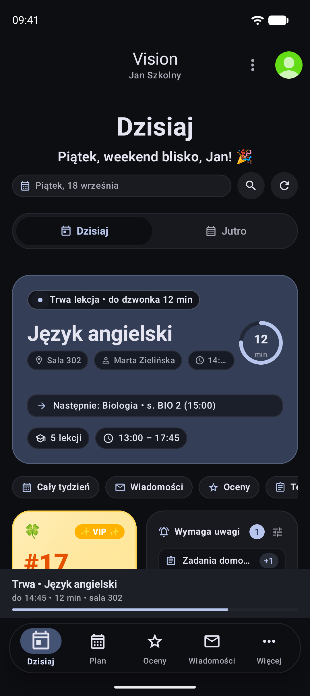
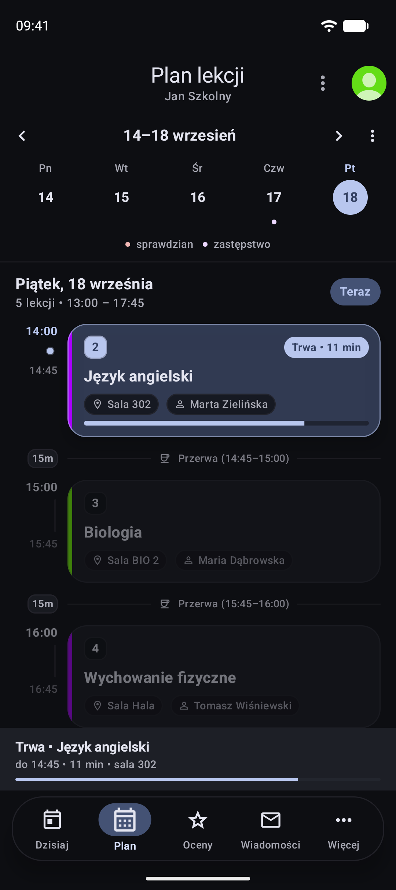
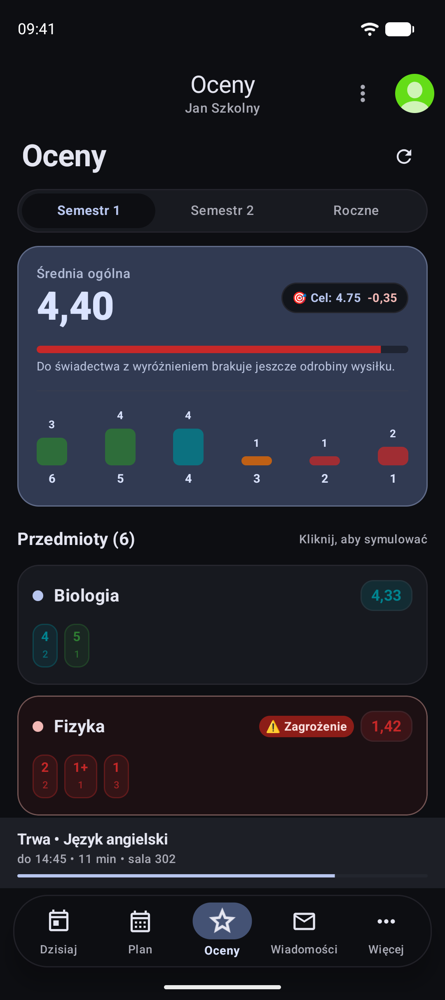
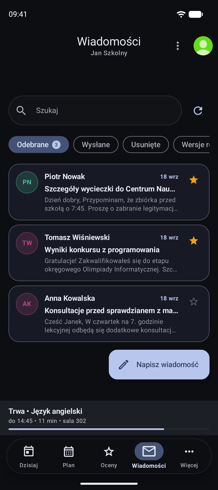
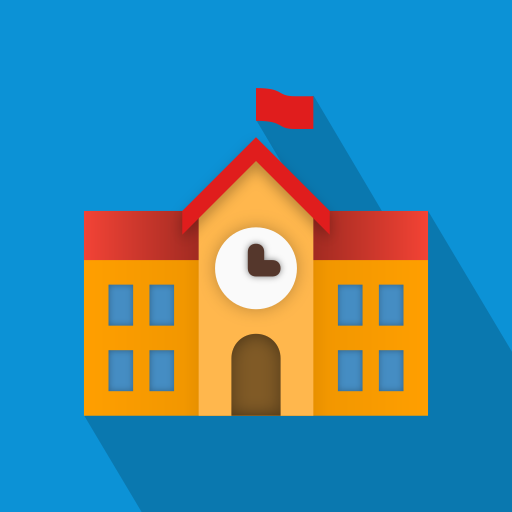

Dziennik szkolny.
Zaprojektowany od nowa.
Pożegnaj toporny interfejs MD2 i sięganie do górnego rogu. Vision przenosi całą nawigację pod kciuk, łączy płynność iOS z dynamiką Material Design 3 i działa w 100% offline.




Szkolny.eu vs Vision
Zobacz bezpośrednie zestawienie. Porównaj stary, toporny interfejs z 2018 roku z nowoczesnym standardem zaprojektowanym na 2026 rok.


Szkolny.eu (Przeszłość)
-
Boczne menu (Hamburger drawer)
Konieczność sięgania kciukiem do lewego górnego rogu dużego ekranu.
-
Przestarzały Material Design 2
Sztywne, białe karty z 2018 roku, bez integracji z nowoczesnymi motywami.
-
Brak kalkulatora ocen
Brak możliwości symulowania wpływu nowej oceny na średnią semestralną.
-
Brak trybu offline w szkole
Zawieszanie się i błędy wczytywania przy słabym zasięgu w budynku szkoły.
Vision (Nowy standard)
-
Dolny dock MD3 & iOS
Wszystkie główne zakładki dostępne bezpośrednio pod kciukiem.
-
Material You Monet & AMOLED
Głęboka czerń, dynamiczne barwy dopasowane do tapety i 5 akcentów.
-
Kalkulator celu & symulator
Obliczaj jednym dotknięciem, jaką ocenę musisz zdobyć na koniec semestru.
-
Błyskawiczny odczyt SQLite 0.1 ms
100% danych dostępnych natychmiast, nawet w szkolnej piwnicy bez sieci.
Prywatność, czas i kalkulacje
Funkcje zaprojektowane z myślą o uczniach. Bez kompromisów, bez reklam i bez zbędnego chaosu.
Direct API & Pełny tryb Offline
Połączenie szyfrowane TLS 1.3 bezpośrednio ze szkołą. Zero serwerów pośredniczących.
38 ms
Wszystkie oceny, plan i zastępstwa zapisywane są lokalnie w szyfrowanej bazie SQLite.
Hasła i dane osobowe nigdy nie opuszczają Twojego telefonu. Działa na każdym Androidzie 10+.
Trwająca lekcja & dzwonek
Co muszę dostać ze sprawdzianu?
Wybierz swoją obecną średnią i upragniony cel semestralny, a kalkulator wyliczy minimalną ocenę.
Harmonogram wydań Vision
Przejrzysta ścieżka rozwoju od pierwszego forka szkolny.eu do stabilnego wydania 1.0.
Faza 1: Architektura & Nowy Silnik UI
Przepisanie interfejsu ze starego Material Design 2 na Material You MD3 oraz ergonomiczny dolny dock w stylu iOS. Usunięcie archaicznego drawer menu.
Faza 2: Direct API & Symulator Ocen
Wdrożenie bezpiecznej komunikacji peer-to-peer TLS 1.3 z Librus Synergia. Wprowadzenie kalkulatora średniej, bazy SQLite offline i obsługi zastępstw.
Faza 3: Oficjalne Wydanie APK & Open Source
Pierwsze stabilne wydanie APK na GitHub Releases. Pełna obsługa dynamicznych motywów kolorystycznych Androida 12+ (Monet) oraz pakiet instalacyjny bez zależności od usług Google.
Faza 4: Integracja Vulcan & Widżety Pulpitu
Oficjalne wsparcie dla kolejnych dzienników elektronicznych (Vulcan UONET+) oraz interaktywne widżety Material You na ekran główny Androida (zegar, dzwonek, plan lekcji).
Wszystko o Vision
Odpowiedzi na najczęściej zadawane pytania dotyczące aplikacji, instalacji i bezpieczeństwa.
Tak. Vision łączy się bezpośrednio z oficjalnym API dziennika. Dane logowania i tokeny sesji są zapisywane wyłącznie w szyfrowanym magazynie Twojego telefonu (Android Keystore). Żadne dane nie trafiają na zewnętrzne serwery.
Wystarczy pobrać plik Vision.apk z GitHub Releases, otworzyć go na telefonie i zezwolić przeglądarce na jednorazową instalację aplikacji z tego źródła. Aplikacja nie wymaga roota ani usług Google.
Absolutnie nie. Vision jest w 100% darmowy, open source i wolny od trackerów telemetrycznych czy banerów reklamowych.
Vision zastępuje archaiczny boczny drawer nowoczesnym dolnym paskiem nawigacji (MD3 + dock iOS), wprowadza nowy Home Page, ulepszony plan zajęć, natywną symulację ocen oraz dynamiczny ciemny motyw.
Śledź wydanie Vision na GitHubie
Zostaw gwiazdkę i włącz powiadomienia o wydaniach, by pobrać stabilne APK w dniu premiery 26 września.